为啥 Jev 突然就全网爆火了？
为啥 Jev 突然就全网爆火了？
来源：微信公众号 归档日期：2026-09-21 抓取状态：成功 原文字符：1989｜配图：17 张
摘要速览
- Jev 是 TypeSafe AI（创始人 Diogo Almeida，前 OpenAI 研究员、RLHF/InstructGPT 共同发明者）推出的「System 1 决策模型」，定位不是聊天生成模型，而是机器结构化决策引擎。
- 爆火四因：①便宜到离谱（输入 $0.042/百万、输出免费）；②技术（延迟快约 200 倍、RLCD 概率校准）；③创始人光环+生态（Vercel 首日原生支持）；④Demo 震撼（Minecraft 实时生存、地铁跑酷毫秒避障）。
- 三大强类型决策原语：Noul（伯努利二元，返回 0~1 概率）、Choice（有限选项分类，最高 255 选项，返回全概率分布+置信度）、Score（多阶梯度评分）。
- 核心训练方法是 RLCD（Reinforcement Learning for Calibrated Decisions），目标是「认识论概率校准」，替代 RLHF 的偏好迎合——当它说 90% 把握时，真实统计准确率就是 90% 左右。
核心内容
- 非自回归（Non-Autoregressive）：传 state + typed questions，单次前向传递几十毫秒内一次性返回所有强类型决策，跳过逐 token 解码。
- 名字致敬「杰文斯悖论」（Jevons Paradox）：决策成本逼近 0，AI 自动化决策需求会被彻底引爆。
- 「Prod, Not God」范式：绝大多数软件系统不需要 AGI，只需要精准路由/风控阻断/标签打标。
- 采用速度：Vercel 统计 Jev 是 AI Gateway 史上采用最快的模型。
- 开源复刻已起步：Bespoke Labs 基于 Qwen3.5-9B 开源首个 Jev 替代品 Bespoke Nimble。
可执行启发
- 成本对比参考：相对 GPT-6 Astra / Claude Fable 5.1（输入约 $10/百万、输出 $50/百万），Jev 输入便宜约 238 倍，真实分类/路由/微决策场景综合成本便宜近 500-1000 倍。
- 预测：未来不是 Jev 淘汰旗舰模型，而是 System 1（毫秒级微决策）+ System 2（旗舰生成模型）分工协作。
- AI 应用开发将从「Prompt 玄学」回归正统软件工程，走向工业级交付。
我的想法
（待补充）
原文沉淀
目录
- 背景
- 2. 三大强类型决策原语（Primitives）
- 3. 核心训练方法：用RLCD 代替 RLHF
- 为什么这么火
- 便宜到离谱
- 技术方面
- 1. 延迟从秒级骤降至毫秒级（约 200 倍提速）
- 3. Prod, Not God 的务实范式转移
- 创始人光环 + 生态
- Demo 很吸引人
- 实时敏捷游戏智能体：玩 Minecraft 和《地铁跑酷》
- 社区自发聚合站 Jevable.com
- 使用方式
- 写在最后：我的几点预测
- 相关链接与参考资料
- 1. 官方与开发者入口
- 2. 社区生态与 Demo
- 3. 开源复刻与协同生态
- 4. 深度报道与技术评论
点击上方蓝字关注我，加个🌟标不迷路。
各位小伙伴们大家好，我是 cxuan。
这两天 Jev 这个玩意可以说是全网爆火了，而且这个热度一直在持续，虽然褒贬不一，但给我一种开创决策型大模型先河的感觉。
我估计很多同学还不太清楚这个 Jev 到底是个什么东西，或者听过了没有系统性的了解，这篇文章就跟大家聊聊这件事情。
包括 Jev 是个啥，以及使用场景是什么，为什么突然爆火了，以及接下来我的预测。
背景
9 月 15 号的时候，OpenAI 的联合创始人发了一个帖子，这个帖子直接爆火，现在已经干到 3600w 浏览了。
这么大的浏览量再加上 Diogo 特殊的身份，直接让 Jev 出圈了。
Diogo 抛出来一个问题，为什么在 ChatGPT 发布之后，人类聊天模型的 AGI 仍然迟迟没有到来？
他说过去他们一直在 build 一种隐秘的模型训练方法，这种方法叫 RLCD，基于这套方法训练出来的一种新型模型，叫 Jev。
Jev 的显著特点是：速度极快、成本极低。
这对于现在大模型市场来说，简直太诱人了。
就在这套帖子刚发完没过多久，TypeSafe AI 就进入了大家的视野。因为 TypeSafe AI 说了句听起来非常舒服的话。
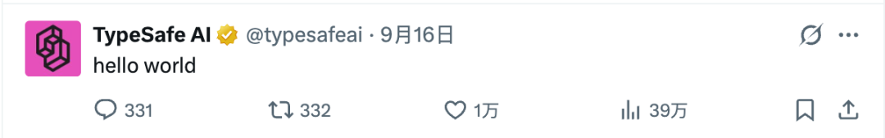
| TypeSafe AI 的总部在旧金山，而 Diogo Almeida 是 TypeSafe AI 的创始人。 |
|---|
Jev 和普通的大模型有着本质的区别。
传统模型输入文本、生成文本，而 Jev 会 完全跳过文本生成。
简单来说，Jev 并不是一个用来聊天或者写文章的 Generative AI 大模型，它的定位是一个专门用于机器结构化决策（Programmatic Decision Engine）的底层模型。
如果借用诺贝尔经济学奖得主丹尼尔·卡尼曼在《思考，快与慢》里的经典理论来解释的话
• 现有的传统大模型属于 System 2（慢思考）：它们像人类一样在脑子里逐词推演、组织长篇大论，能力虽强，但速度慢、延迟高、输出冗长且极其昂贵。
• 而 Jev 则被定义为首个 System 1（快思考）大模型：它模拟的是人类大脑那种下意识、直觉式、毫秒级的快速本能判断。
| 看到这，如果你略微懂点脑科学你就会发现，System 1 + System 2 会完全对应人脑中的理智脑和情绪脑。 而我觉得 System 1 + System 2 结合起来才有可能是未来。（后续会再谈到这个说法） |
|---|
1. 彻底抛弃自回归文本生成（Non-Autoregressive）
传统的大语言模型之所以慢，是因为采用了自回归（Autoregressive）架构，即模型必须一个 token 一个 token 地往外吐。你想让模型返回一个简单的分类结果，它也得完整走一遍解码（Decode)过程。
而 Jev 彻底去掉了这一环节，开发者只需要向模型传入：
- 一段未结构化的状态数据（State）：比如一封客户工单、一段游戏画面描述、一段日志或一段用户输入；
- 预先定义好的一组带类型的问题（Typed Questions）。
Jev 接收到请求后，会通过单次前向传递（Single Parallel Pass），在几毫秒至几十毫秒内，直接将所有维度的决策结果以强类型的形式一次性返回。
2. 三大强类型决策原语（Primitives）
在 Jev 内部，抛弃了容易产生歧义的复杂 Prompt 魔法，只支持三种标准化的强类型原语：
• Noul（伯努利二元判断）：专门处理 Yes/No 问题。它的名字来源于 No 与 Boolean 的缩写，并且隐喻统计学中的伯努利（Bernoulli）分布。它不会只输出 true 或 false，而是直接返回一个 0.0 ~ 1.0 之间的精确概率值。
• Choice（有限选项分类）：从预定义的列表中选择最匹配的选项（最多支持 255 个选项）。它不仅返回命中项，还会给出所有选项的全概率分布和整体置信度（Confidence）。
• Score（多阶梯度评分）：根据预定义的评分标准（如 0 到 10 级阶梯），测量输入内容的严重性、紧迫度或相关性，返回带有置信度的连续数值。
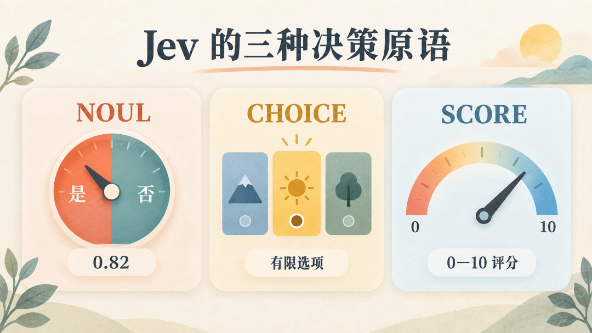
3. 核心训练方法：用RLCD 代替 RLHF
前面我们提到了，Diogo Almeida 提出了全新的训练方法 RLCD。因为他非常清楚传统 RLHF（人类反馈强化学习） 在工程落地的致命缺陷： RLHF 的目标是迎合人类的喜好（Preference），这导致生成模型常常为了讨好人类而产生严重的过度自信（Overconfidence）和幻觉（Hallucination）。
而 RLCD 的优化目标是认识论上的概率校准（Epistemic Calibration）。 所谓校准，指的是：当 Jev 说它有 90% 的把握时，它在真实统计上的准确率就恰好是 90% 左右。 这种极其诚实的概率分布，让开发者可以非常放心地在软件逻辑中设置自动化阈值（例如：置信度高于 0.85 自动走流水线执行，低于 0.85 自动流转给人工介入）。
为什么这么火
我觉得 Jev 之所以这么火，大概有以下四种原因：
便宜到离谱
Jev 能够迅速刷屏，最直观的冲击力就是它的定价策略，简直是对传统大模型价格体系的降维打击：
• 输入 Token：$0.042 / 1M tokens（每百万 Token 仅 0.042 美元，换算下来十亿 Token 只要 42 美元！）。
• 输出 Token：完全免费（Free）！ 官方直接表示输出成本低到无需计量（too cheap to meter）。
我们可以横向对比一下当下主流的 Frontier 旗舰大模型：
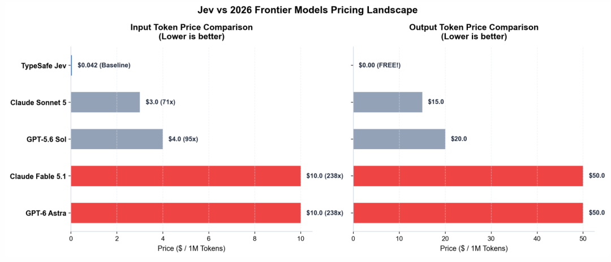
• 当下当红的旗舰模型（如 GPT-6 Astra、Claude Fable 5.1），输入通常在 $10 / 1M tokens，输出更是高达 $50 / 1M tokens。
• 相比之下，单单看输入成本，Jev 就直接便宜了 238 倍；
• 如果再算上 Jev 完全免费的输出，在真实的分类、路由与结构化微决策场景中，综合成本比当前的顶级大模型便宜了近 500 到 1000 倍。即便是对比轻量级的日常主力模型，也有近百倍的成本优势。
顺带一提，Jev 这个名字正是致敬了经济学上著名的杰文斯悖论（Jevons Paradox）。
| 杰文斯悖论指出：当某项技术让一种资源的消耗效率提升、成本大幅降低时，这项资源的总消耗量不但不会减少，反而会迎来指数级的爆发。TypeSafe AI 起这个名字，就是笃定随着机器决策成本无限逼近于 0，整个软件世界对 AI 自动化决策的需求将被彻底引爆。 |
|---|
技术方面
除了极致的便宜，Jev 在工程与架构层面解决了一大批困扰全行业很久的痛点：
1. 延迟从秒级骤降至毫秒级（约 200 倍提速）
以往在软件工程中引入大模型，最怕的就是在 LLM 调用环节卡死。传统生成式大模型从接收请求到输出哪怕一个简单的 JSON，通常也需要数百毫秒甚至几秒钟。
Jev 由于跳过了逐字生成的解码过程，采用非自回归的单次并行推理，端到端延迟通常在 70ms 到 500ms 之间，在轻量场景下甚至能压到 十几毫秒。比起通用大模型动辄数千毫秒的调用链，速度提升了接近 200 倍。
2. 概率高度校准，真正支持人机协同（Human-in-the-loop）
传统 LLM 生成的内容往往伴随着未知的幻觉，且模型自己对答案缺乏诚实的感知能力。 而 Jev 依托 RLCD 带来的校准概率，输出的每一个结果都会伴随真实的置信度分布。在生产环境里，工程师可以直接写出极具确定性的业务规则：
# 只有当模型置信度极高时才自动放行，否则安全转人工
if decision.confidence > 0.88:
execute_automation()
else:
route_to_human_agent()3. Prod, Not God 的务实范式转移
在过去两年里，AI 界几乎陷入了造神的军备竞赛，都在卷更大的参数、更多的算力、追寻全知全能的超级通用智能（AGI）。 但现实的工程世界里，绝大多数软件系统根本不需要这样的神。系统需要的只是在数据流中极其精准地做一次路由、做一次风控阻断、或者做一次标签打标。TypeSafe AI 提出的 Prod, Not God（交付生产，而非盲目造神），恰恰击中了广大生产一线开发者的痛点。
创始人光环 + 生态
创始人 Diogo Almeida 是前 OpenAI 核心研究科学家，更是 RLHF（人类反馈强化学习） 以及 InstructGPT 的核心发明人之一，当年正是他与团队奠定了今天 ChatGPT 乃至整个主流对齐范式的基石。
一个当年亲手缔造了当今对话模型基石的大佬，如今亲自跳出来复盘 RLHF 在工程落地的弊端，带着豪华团队提出 RLCD 和全新的 System one 架构，这种技术说服力和反思精神在整个硅谷和开发者圈直接拉满。
而在生态合作上，Jev 的动作也是教科书级的：
• Vercel AI SDK 首日原生支持：Vercel CEO Guillermo Rauch 亲自站台力挺，宣布全面接入。Jev 在发布第一天就通过 Vercel AI Gateway 和 AI SDK 的 experimental_evaluate 提供了原生支持，数以百万计的 Next.js 和 Node/TS 开发者不需要折腾复杂的底层网络协议，直接就能在生产项目中开箱即用。
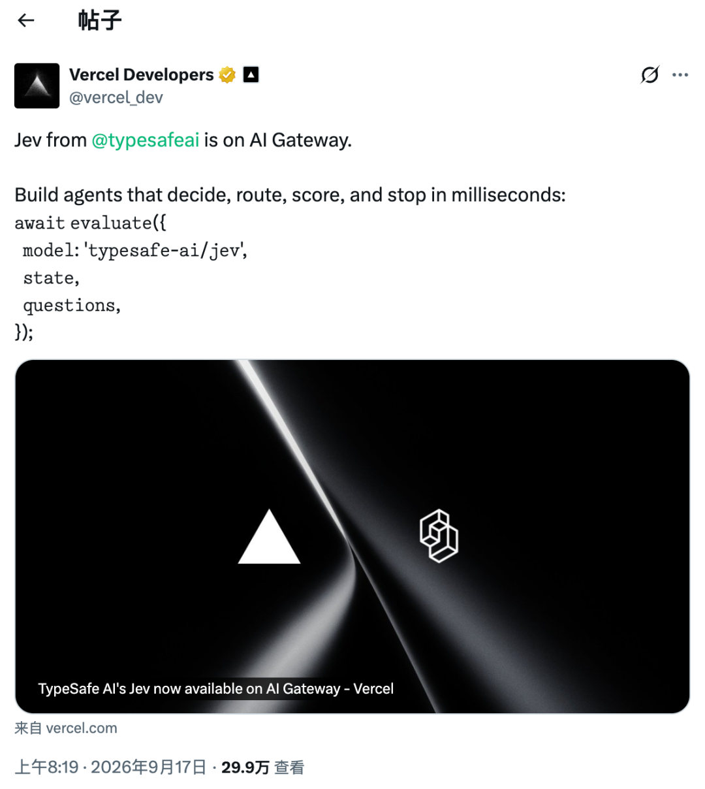
• 全平台 SDK 齐备：官方第一时间上线了面向 Python 的 typesafe-sdk 和面向 Node/TypeScript 的 @typesafe-ai/sdk，同时开放了 OpenRouter 等聚合平台的统一路由接入。
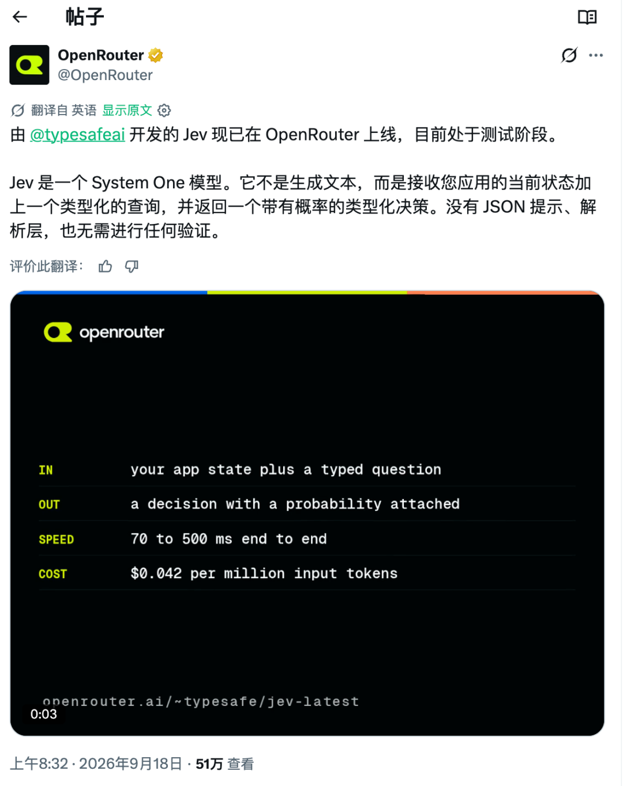
• 主流科技媒体集中爆破：TechCrunch、Forbes、Business Wire 等顶级科技媒体密集报道，直接形成了一场现象级的技术出圈事件。
Demo 很吸引人
光讲理论可能还不够直观，Jev 之所以在开发者群体中瞬间引爆，是因为社区和官方发布的几个实时 Demo 实在太有冲击力了：
实时敏捷游戏智能体：玩 Minecraft 和《地铁跑酷》
这是目前在各大技术圈转疯了的两个 Demo：
• Minecraft 实时生存 Agent：以往用 LLM 控制游戏角色，因为通常有 1~3 秒的推理延迟，往往僵尸都走到脸上了角色还在“思考”。而用 Jev 搭建的 Minecraft Bot，每隔几十毫秒实时捕获周围的环境状态（当前血量、有无僵尸、光线亮度、手中方块），瞬间并行输出多个动作决策与风险评分。在毫无任何硬编码规则的情况下，能够做到实时灵活走位、躲避怪物，并在夜幕降临或残血时精准寻找庇护所。
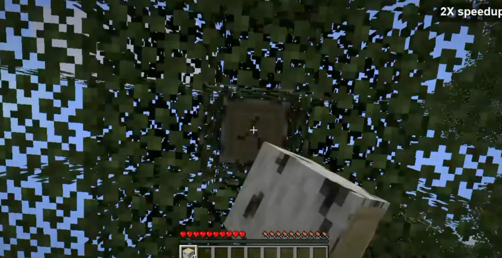
• 《地铁跑酷》毫秒级避障：高频反应类敏捷游戏一直是大模型的绝对禁区。开发者用 Jev 实现了一个高频毫秒级决策闭环，针对每一帧游戏画面的状态，Jev 在极短时间内输出 [Jump, Duck, MoveLeft, MoveRight] 的置信概率，角色在铁轨上行云流水般跳跃滑铲、躲避迎面而来的列车，让人第一次直观感受到了 System 1 神经反射的威力。
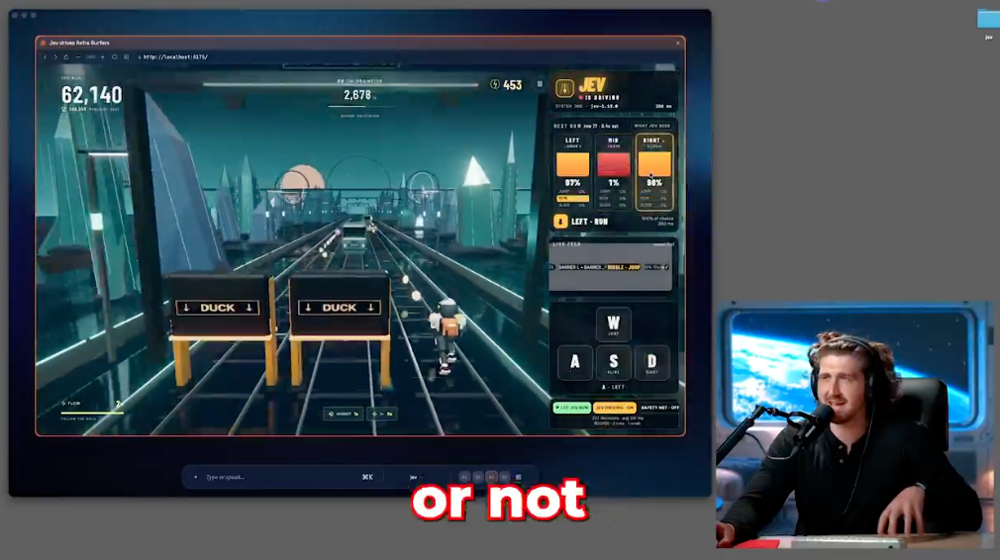
社区自发聚合站 Jevable.com
由于社区开发者开发的应用和 Demo 涌现得太快，大家甚至在几天内就自发上线了专门的生态导航站 Jevable.com，集中收录全球开发者基于 Jev 打造的各类智能体决策流、代码审查微工具、客服自动化管道和仿真实验，足以看出其强劲的社区生命力。
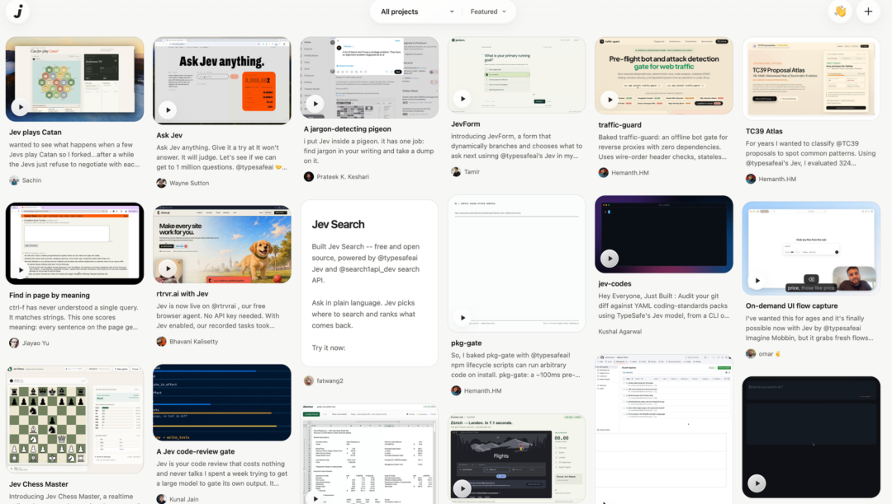
而且我才看到 Vercel 发了一个统计，Jev 的采用速度比 AI Gateway 历史上任何其他模型都要快。
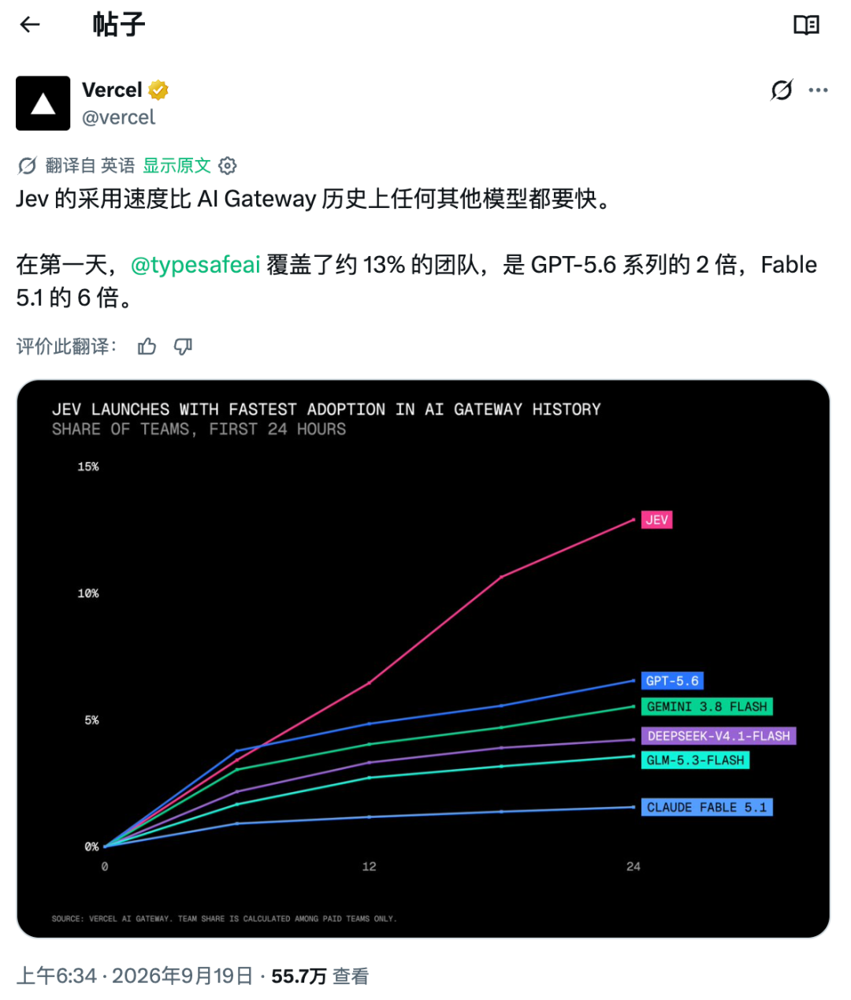
使用方式
目前 Jev 的使用方式仍旧是通过白名单的方式，
打开 TypeSafe AI 官方，输入邮箱，然后 Join waitlist 。
基本上时间不用等太久，今天申请的明天就通过了，我就是这样。
官网长这样
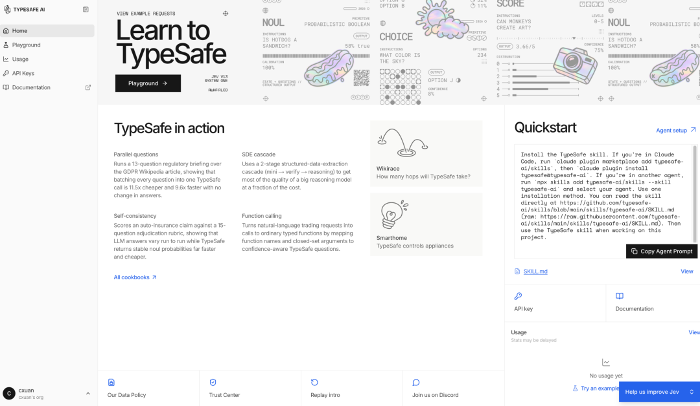
初始是有 5$ 的额度，虽然看起来不多，但是真的能用很久，因为我们传统认识中的大模型输出，在这里是免费的。
写在最后：我的几点预测
聊完 Jev 的技术、价格和生态，最后回到我开篇提到的，谈谈我对接下来的几点预测：
未来绝对不会是 Jev 淘汰像 GPT-6 Astra 或 Claude Fable 5.1 这样的顶级大模型，而是分工协作：
• System 1 做毫秒级的意图路由、安全拦截、工单分流和状态判定，把 90% 的低成本微决策在边缘直接毫秒级消化。
• System 2（当代旗舰生成模型）负责攻坚：只在需要深度长链推理、开放式综合创作、复杂代码架构时才被使用。
- 开源社区很快会迎来一批开源版 Jev。
说是很快迎来，其实已经迎来了。
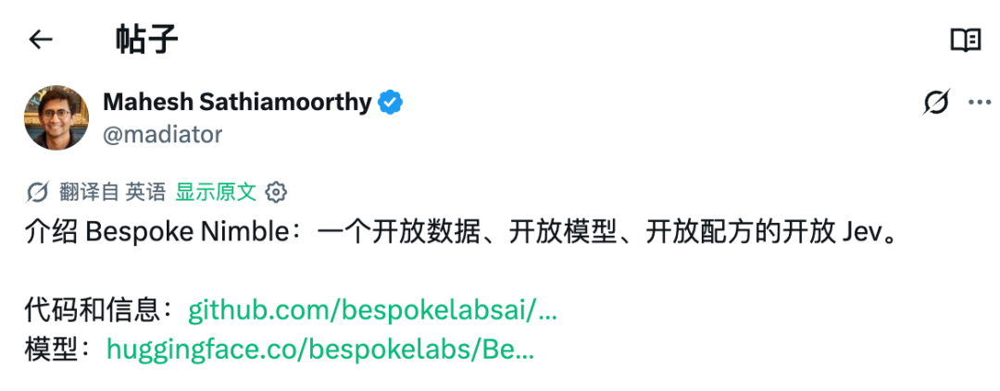
上面截图里正是 Bespoke Labs 刚刚火速开源的 Bespoke Nimble——他们基于 Qwen3.5-9B 底座，完全开源了数据、权重和训练配方，打响了开源复刻 Jev 的第一枪。
Diogo 和 TypeSafe AI 最大的贡献，我觉得是把 非自回归决策模型 + RLCD 校准概率这条被行业忽略的赛道彻底打通了。 既然技术路径已经清晰，在接下来的几个月内，开源社区（如 Hugging Face、vLLM 等生态）一定会迅速跟进，推出各种基于轻量基座微调的开源强类型决策小模型，本地私有化部署微决策的成本还会进一步下探。
AI 应用开发将从 Prompt 玄学回归正统软件工程
过去这几年，做 AI 应用最痛苦的莫过于调 Prompt，求爷爷告奶奶让大模型老老实实输出合法 JSON，还要写一堆容错和重试。 正如 TypeSafe AI 的那句 Slogan：Prod, Not God。 行业终究会从盲目造神的过程中冷静下来，走向踏踏实实的工业级交付。
也许到时候，许愿时 vibe coding 才会迎来它的 “Happy Ending”。
如果这篇文章你觉得还不错，谢谢你的三连，也希望可以转发给同样关注 AI / 科技 / 开发效率的朋友。 我是 cxuan，我们下期再见。
** **
相关链接与参考资料
如果你对 Jev 及其背后的 System 1 决策模型感兴趣，以下是整理的相关核心文章、项目与拓展阅读链接：
1. 官方与开发者入口
• TypeSafe AI 官网：https://typesafe.ai
• 开发者控制台（申请 Waitlist / 获取 Key）：https://console.typesafe.ai
• TypeSafe 官方开发文档：https://docs.typesafe.ai
• Diogo Almeida 发帖出圈原帖（X / Twitter）：https://x.com/diogo_almeida（Diogo 探讨为什么聊天模型无法带来 AGI 的 3600w 浏览爆款长文）
2. 社区生态与 Demo
• Jevable 社区项目导航站：https://jevable.com（收录全球开发者搭建的 Minecraft Bot、跑酷避障、客服工单分流等各类 Demo）
• Vercel AI SDK 官方集成：https://sdk.vercel.ai/docs/ai-sdk-core/evaluation（Vercel 官方首发支持 Jev 的 experimental_evaluate 规范）
3. 开源复刻与协同生态
• Bespoke Nimble（首个开源 Jev 替代方案）：
• GitHub 仓库：https://github.com/bespokelabsai/nimble
• Hugging Face 模型权重：https://huggingface.co/bespokelabs/Bespoke-Nimble
4. 深度报道与技术评论
• TechCrunch 独家报道：TypeSafe AI exits stealth with $40M from DCVC to launch Jev, a System 1 decision model
• Forbes 商业深度：Beyond the Chatbot: Why Daniel Kahneman's System 1 is the Next Frontier for AI
• Latent Space 播客专栏：The Rise of System 1 Models and RLCD: Interview with Diogo Almeida
归属：归属：归属：[[02-输入/按主题/AI与效率/_index|AI与效率]]
归属：[[02-输入/按主题/AI与效率/_index|AI与效率]]